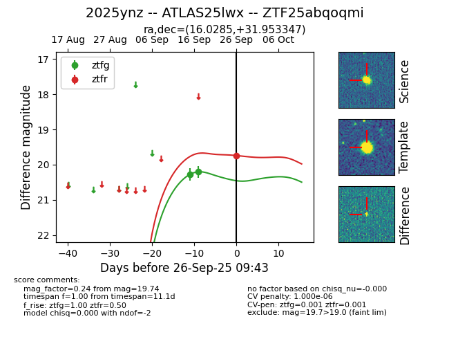
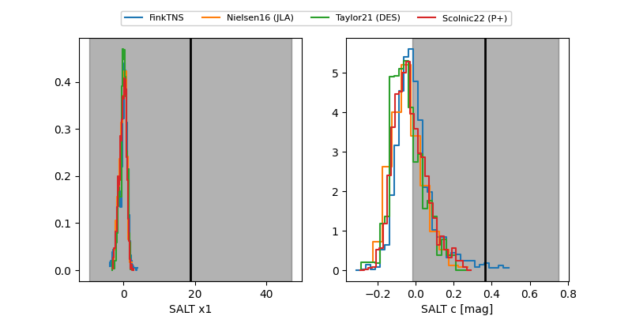

FINK: ZTF25abqoqmi
Lasair: ZTF25abqoqmi
ALeRCE: ZTF25abqoqmi
TNS: 2025ynz
YSE: 2025ynz
ZTF25abqoqmi (ztf,fink)
2025ynz (tns,yse)
ATLAS25lwx (atlas)
equatorial (ra, dec) = (16.0285,+31.95335)
galactic (l, b) = (126.0636,-30.84131)


last ztfg=20.20, ztfr=19.74
2 ztfg, 1 ztfr detections